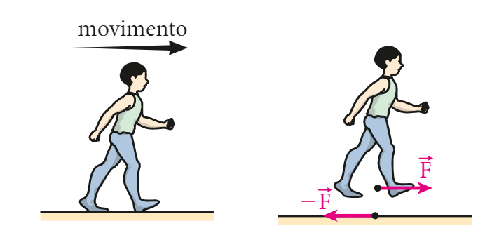
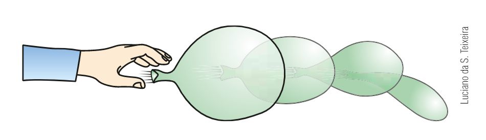

Terceira Lei de Newton
A Terceira Lei de Newton ou Lei da Ação e Reação, consiste em:
Se um corpo A exerce uma força no corpo B, o corpo B reage exercendo uma força sobre o corpo A, de mesmo
módulo e
direção, mas com sentido contrário.
Dessa forma, percebemos que as forças agem em pares e a toda força de ação corresponde a uma de reação.
Importante!!! Um par de ação e reação são aplicadas em corpos diferentes, por isso, NÃO se
anulam.
| Características das forças de ação e reação | |||
|---|---|---|---|
| Possuem o mesmo módulo (valor) | |||
| Possuem a mesma direção (ex: horizontal, vertical) | |||
| Possuem sentidos contrários | |||
| Não se anulam | |||
| Atuam em corpos diferentes | |||
| E aí? Agora ficou fácil? | |||
Exemplos:
-
Chutar ou Sacar uma bola

Quando um jogador atinge a bola com o pé (futebol) ou com a mão (vôlei), a força de ação exercida durante o chute/saque faz surgir uma força de reação exercida pela bola no pé/mão do jogador. Observe nas imagens:

-
Caminhar
Ao andar, a pessoa exerce uma força no solo, empurrando-o "para trás" e consequentemente, o chão empurra a pessoa "para frente". Observe na imagem:
 -
Foguete
Quando ocorre o lançamento de um foguete, os gases que são expelidos aplicam uma força (ação) que portanto, empurram o foguete (reação).

-
Balão
Esse exemplo, é um dos quais você pode ver nitidamente a aplicação da Lei da Ação e Reação.

Ao soltar um balão cheio (sem estar amarrado, claro), percebemos que o balão se movimenta à medida que é expelido o ar dentro dele. Assim, cada partícula de ar recebe uma "força pra trás" e que por consequência, reagem no balão com pequenas "forças pra frente" e que assim, aceleram o corpo elástico do balão.